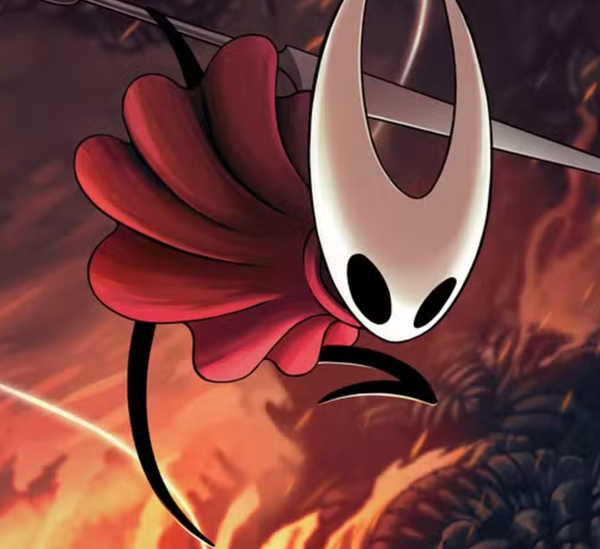

Hornet
Hornet é a princesa-protetora de Hallownest e filha do Rei Pálido com Herrah, a Besta. Ágil e determinada, ela testa o Knight diversas vezes durante sua jornada, protegendo o reino e os segredos que ele guarda. Hornet é também a protagonista do jogo Hollow Knight: Silksong.
Hornet

Espécie: Aracnídea
Gênero: Feminino
Origem: Ninho Profundo
Pai: Rei Pálido
Mãe: Herrah, a Besta